Learn the SPX gap model, step by step
LumiTraders (Dasha) trades one main setup on almost every New York morning. She calls it "my SPX strategy". This course teaches it in 20 short steps. Do them in order. Each step builds on the one before.
- 0%9:30 open · 7,666.98
- 25%7,676.74
- 50%7,686.50
- 62%7,691.18
- 70.5%7,694.50
- 100%close · 7,706.02
Every step has the same four parts
What you will learn
One sentence at the top tells you what you can do after the step.
Read and look
A short explanation with diagrams and her real charts.
Practise it now
Small tasks on your own chart. Tick them off as you go.
Prove you got it
One or two questions. Answer them correctly to complete the step.
The path from first to last
Ticks and completed steps are stored in this browser, so you can stop and come back later. Use the outline on the left (or the "Go to" menu on a phone) to jump around, but the first time through, follow the order.
Personal study aid. Lesson charts © LumiTraders / Funded.Now; stream screenshots from her public YouTube streams. Not financial advice.
The big idea
Explain the whole model in one sentence, and know how often it really works.
Every weekday the US stock market closes at 4:00 PM and opens again at 9:30 AM New York time. The S&P 500 index usually opens at a different price than it closed. The empty space between the two prices on the chart is called the gap.
Her model in one sentence:
Draw yesterday's close and today's open on the SPX chart. Watch what price does in the first 30 minutes. Wait for price to pull back to one of four fixed levels inside the gap. Enter on ES futures when a 2-minute candle confirms the turn.
Chart SPX, trade ES
SPX is the S&P 500 index itself. You cannot buy it directly, so she places the order on MES, the micro S&P 500 futures contract. She says levels drawn on ES only "work like 30–40% of the time".
9:30 – about 11:30 AM
She streams from 9:00 AM New York time, and most setups come between about 9:45 and 11:00. She says the levels work "all day from 9:30 to 4:00"; stopping before lunch is her schedule, not a rule of the model.
Four levels, one signal
25%, 50%, 62% and 70.5% of the gap. One entry signal: a 2-minute candle called a CISD (you will learn it in step 7).
The six things she does every morning
Set the bias
Is the bigger picture pointing up or down?
Measure the gap
Under 10 points: no trade today.
Watch liquidity
Does price take the nearest high or low in the first 30 minutes?
Pick the setup
That answer decides Playbook A, B or C.
Wait for the signal
A 2-minute CISD in the zone, then enter.
Manage, then stop
Take profit early. Two losses and done.
How good is it? Be realistic
- "This strategy has 60% win rate" (Sep 16).
- About 63% wins (Sep 3, Sep 11, Sep 17), at about 1.3R: "My risk reward used to be two R… now 1.3R" (Sep 3).
- "76%" on the SPX model (Sep 29), but in the same breath: "overall my win rate for this year less than 70%… because I still take B setups."
- "Less than 70%. But more than 65" (Oct 2). "I don't even have 65% win rate" (Sep 17).
Plan around about 6 wins in 10 trades, each win about 1–1.3 times the size of a loss. That only works if you follow the rules. In the 29 sessions reviewed for this course, most of the losses she took came from breaking one of her own rules. Her written lesson adds: "Nothing works 100% of the time."
Where the model came from: she first built it for ES. On Sep 17 she said it "stopped working [on ES] almost two years ago", so she tested other charts and found only SPX levels held; it did not work on SPY either. Her explanation (Sep 24): SPX does not trade overnight, so its gap is clean. "I backtested. I cannot explain why it goes to OTE, just it works like this." (Aug 25)
Do this now
Set up your charts
Have the same three charts and indicators on your screen that she uses.
| Chart | Symbol | Timeframe | What it is for |
|---|---|---|---|
| SPX | SPCFD:SPX on TradingView (free) | 2-minute | The gap, the levels and the entry signal. Every decision is made here. |
| MES | MES1! | 2-minute | Where you place the order. Micro contract: $5 per point. |
| NQ | NQ1! | 2-minute | A second opinion. If NQ points the other way, she skips or trades smaller. |
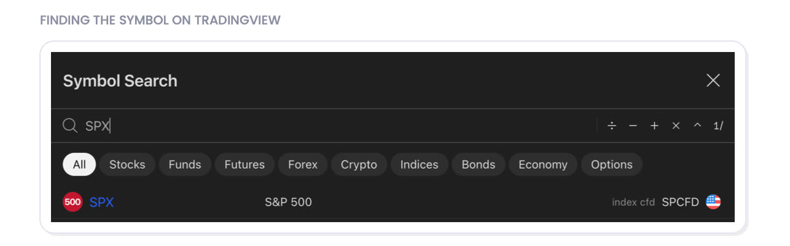
The indicators (free, by LumiTraders)
RTH Gap Fibs
Draws today's gap and its four levels automatically, and keeps old unfilled gaps on the chart.
Key Levels
Marks yesterday's high and low, the overnight session highs and lows, and the important opening prices.
HTF Candles + CISD
Optional. She uses it on ES and NQ to draw order blocks and their 50% line automatically. Learn step 7 by hand first.
RTH Gap Fibs settings
| Setting | Set it to |
|---|---|
| Levels | 0.25 0.5 0.62 0.705 plus 0 and 1. Turn the others off. |
| Invert anchors | On. By default the indicator puts 0% on yesterday's close. She measures from the other end: 0% on the 9:30 open, 100% on yesterday's close, so the 25% line is the one nearest the open. |
| Session end | 16:08, timezone America/New_York. "Don't put four here. Put 4:08… a real deal closure at 4:08" (Sep 2). Her written lesson just says "4:00 PM close", but her live levels use 4:08, so use 4:08 to match her charts. |
| Confirmation timeframe | 2 minutes. A level turns red only when a candle on this timeframe closes through it, which matches her 2-minute close rule for 70.5%. |
| Auto-remove balanced gaps | On. Old gaps that are fully filled disappear, and the unfilled ones stay on the chart (you need them in steps 12–13). |
Key Levels: set its timezone to America/New_York too. It also draws the 10:00 AM open, which you will use from step 6.

Do this now
Learn 8 words
Understand every word she uses when she talks about this model.
She uses trading slang from a teacher called ICT. You only need these eight words.
RTH gap
The empty space on the SPX chart between yesterday's close (4:08 PM) and today's open (9:30 AM). RTH means "regular trading hours".
BSL and SSL
Obvious highs and lows where many traders have stop orders. A high is buy-side liquidity (BSL), a low is sell-side liquidity (SSL). For this model she only counts a clear swing you can see on the 15-minute chart or higher (step 6 lists which ones).
"Taking" liquidity
When price pokes past one of those highs or lows, it has "taken" or "swept" it. Whether this happens in the first minutes decides which setup you trade.
Optimal trade entry
The deep zone of the gap, between 62% and 70.5%.
Change in state of delivery
Her entry signal: at a level, a 2-minute candle closes past the run of opposite candles that started at that level. In plain words, the 2-minute chart shows that price has turned. Step 7 teaches it.
OB and its 50%
The box drawn around that run of candles. Her lesson: "Order block is a change in the state of delivery", so the OB and the CISD are the same event. Its middle line (the 50%, also called "mean threshold") must hold, or the signal is failing.
The second opinion
NQ is the Nasdaq futures. Normally it moves with ES. When ES is above its midnight open and NQ below (or the other way round), she calls the market "decoupled". Then she keeps her funded accounts out and only trades on evaluation or competition accounts.
Risk unit
1R is what you lose if your stop is hit. A +1.5R trade made one and a half times what it risked.
Do this now
Draw the gap and its four levels
Find the gap on any day and know where the 25%, 50%, 62% and 70.5% levels are.
The levels measure how far price has come back into the gap, counted from the open. 25% is a small pullback. 70.5% means price has come back almost all the way to yesterday's close.
| Level | In plain words | What she uses it for |
|---|---|---|
| 25% | A small pullback | Entry zone for Playbook A. Also a common place for a first profit when a trade runs back toward the open (as on Sep 24). |
| 50% | Halfway back | The bottom of the Playbook A zone. A common stop on big gaps. |
| 62% | A deep pullback (start of the OTE) | Target in Playbook B. Her best entries start here. |
| 70.5% | Almost all the way back | The line in the sand. If a 2-minute candle closes past it, the gap usually fills completely (Playbook C). |
Gap calculator
Type yesterday's SPX close and today's SPX open. You get the size, direction and the price of every level.
Filled in with her real Sep 24 gap. Compare with her chart below.

Do this now
Is today tradeable?
Decide before 9:30 whether today is a day to trade the model, and how big.
Many days she does not trade at all. These filters decide it.
| Situation | What she does |
|---|---|
| Gap under 10 points | No Playbook A or B. "10 points gap, that's at least what I want… Two, three points for me is like no gap" (Sep 2). Only Playbook C (step 10) or an older gap (step 13), at small size. Be careful: "I take most losses when S&P doesn't have gap" (Aug 27). |
| Gap 10–60 points | Normal day. |
| Gap over 60 points | She has not backtested these. Smaller size. On these big gaps she accepts a reaction slightly before 25% as a B-grade trade. |
| ES and NQ disagree | "Decoupled equals stay away." She keeps funded accounts out and trades only on evaluation or competition accounts: "Better to protect your accounts when market is decoupled. Even if your model is here" (Sep 15). |
| News at 10:00 | Do not trade before the 10:00 news. Wait for the 10:00 candle to close: the first minutes are "either manipulation or super choppy". |
| FOMC day | Half risk, evaluation accounts only, or no morning trade. On Sep 16 (FOMC) she traded an evaluation account and lost. |
| Trend day | Price runs one way with tiny pullbacks: don't trade against it. She only does when the pullback clearly makes sense: "when retracement makes sense, you can trade against the trend" (Sep 28). A hint before the open: the midnight open was tested between 3 and 7 AM and price then opens far away from it. |
Setting the bias (which way you expect the market to go)
- Look at the daily chart
Where is price heading? Toward yesterday's high, an old unfilled gap, or last week's high or low?
- Compare ES and NQ with their opening prices
Use the Key Levels indicator: the midnight open (NYMO), the daily open (6 PM the evening before, on futures) and the weekly open. If both ES and NQ are holding above them, the day leans up. Both below: leans down. One above and one below: decoupled. Her PO3 lesson warns that just being above or below an open "means nothing" until a candle has closed beyond it and price stays away from it.
- Write two plans
One for "price does not take the nearest high/low" and one for "price takes it". You will learn both in steps 8 and 9.
Do this now
The first 30 minutes choose the setup
Answer her most important question at 9:30–10:00, know which setup it points to, and use the 10:00 AM open as a filter.
"Did we take near liquidity level first 15 minutes on S&P? You need to answer this question before entering the trade."Aug 25 live stream
Part 1 · Find the nearest liquidity
At 9:30, find the nearest clear high above the open (on a gap up) or the nearest clear low below the open (on a gap down). It counts if it is:
- a swing high or low you can clearly see on the 15-minute chart or higher (30-minute, 1-hour);
- yesterday's high or low, equal highs or lows, or a London/Asia session high or low, but only if it also forms such a swing. Tiny 2-minute equal highs do not count (Oct 2).
If price opens already beyond the level, that level was not "taken" in the first minutes; look for the next one. If there is no clear level nearby, she watches 25–50% first but still accepts a reaction from the OTE: "I will right now observe 25 and 50%, but if it's going to be OT… I will accept this as well" (Oct 2).
Part 2 · Watch it until 10:00
Her written lesson uses the first 15 minutes. On stream she has extended it: "I used to use only first 15 minutes from 9:30 to 9:45 but… since July… I decide to extend time to 30 minutes… wait until 10… more safe" (Sep 25). So the rule this course uses is: taken between 9:30 and 10:00 → Playbook B. Not taken by 10:00 → Playbook A. The faster it happens, the cleaner the setup ("ideal before 10").
Only the "not taken" answer needs the full 30 minutes. Once the high or low is taken, Playbook B can trigger straight away; a 2-minute close past 70.5% (Playbook C) never waits. She prefers to wait until 10:00, but she did enter earlier on several days (for example Sep 18, 22, 25, 30 and Oct 2): "No reason for 10 for today" (Sep 18).
Expect a small pullback to 25–50%, then a move to take that high or low.
Expect a deep pullback to 62–70.5% (the OTE).
Expect the whole gap to fill, back to yesterday's close.
"First 15 minutes, something should happen. We either fail to take liquidity level or we're going to take near liquidity level."Aug 25 live stream
"Big huge bold rule number one. I'm trading my model only. If it goes up without me, it goes up without me because no model entry" (Oct 2). If price never pulls back into the zone, there is no trade. Missing a move is fine. Chasing it is not.
| Time | What can trigger |
|---|---|
| 9:30–10:00 | Playbook B (once the high/low is taken) and Playbook C (a 2-minute close past 70.5%). Nothing at all if there is news at 10:00. |
| 10:00 news | Wait for the 10:00 candle to close, then treat it as after 10:00. |
| After 10:00 | Any playbook, and only on the right side of the 10:00 open (part 3 below). |
Part 3 · Mark the 10:00 AM open
At 10:00 a new 4-hour candle opens. Its opening price is her second filter, and the Key Levels indicator draws it for you. The idea from her 10 AM lesson:
Open → Low → High → Close
Price often dips below the 10:00 open first (the lower wick, a stop grab), then breaks back above it and builds the body. Look for longs only after a 2-minute candle body closes above the 10:00 open.
Open → High → Low → Close
Price often pokes above the 10:00 open first, then breaks back below it. Look for shorts only after a 2-minute candle body closes below the 10:00 open.
- A wick through the open proves nothing. She wants a body close, ideally with a strong candle, and price holding that side on the pullback.
- It is a filter, not an entry: "The 10:00 AM Open is not an automatic entry level." You still need the gap level and the 2-minute signal.
- Do not put your stop one tick beyond the 10:00 open. Put it where the trade idea is wrong (the swing).
- Once a trade is running, a strong break back through the 10:00 open is a warning: "10 a.m. open break means shift in structure for me, shift in bias" (Sep 17).
Aug 24: the low was taken in the first 15 minutes (a buy-toward-OTE day), but she shorted and lost $350. Sep 25: she sold before 10:00 with no 2-minute signal and lost about $255. Both are in the losses table.
Do this now
The entry signal: a 2-minute CISD
Spot her entry signal on a 2-minute chart and know exactly where to enter and where to put the stop.
A level only tells you where to look. You never buy or sell just because price touched it. You wait for the 2-minute chart to show the turn. Every setup in this course uses this same signal.
- Price reaches the level (for example 25% of the gap).
- Find the run of red (down)green (up) candles that starts with the first candle that touched the level. The open of that first candle is the CISD line. The box around the run is the order block.
- Wait for a 2-minute candle to close abovebelow that line with a strong body. That is the signal.
- Enter at the open of the next candle. Stop goes beyond the swing lowhigh. The box's middle line (50%) must hold.
Why start the run at the level? Her lesson: long runs of same-colour candles sometimes cover a whole range, and waiting for price to close past all of them "would not make sense because we would likely miss most of the move". So the order block only begins at the candle that tapped the level. If the candles have long wicks, draw the box around their bodies only; with small wicks, use the full candles.
Five rules for a good signal
- It starts at a level.A gap level (or another higher-timeframe level). "We don't enter off random order blocks" (Oct 2). The run of candles begins with the first one that touched it.
- It is a close, with a strong candle.A wick poking through does not count. She wants displacement and "fast delivery". A slow, grinding turn is where she loses: "most my losses happens in this kind of situation" (Aug 25).
- The 50% line holds."50% of order block tells me if it's high probability or low probability OB" (Sep 17). A clear close back through it means the signal is failing. If price comes back later (even hours later) and the 50% still holds, the block is still valid.
- It shows on SPX."We got closure on MES… never got this closure on SPX. We trade SPX" (Sep 17). The close must happen on the SPX chart, not just on ES.
- Not a V, not from nowhere.A sharp V-shape or a turn in the middle of nowhere is not valid: "We can't reverse from nowhere. It must be your rule #1!" (her X post).
- She says only the 2-minute is backtested for this model and never uses the 1-minute. She sometimes checks 3- and 5-minute blocks too ("two, three, and five", Sep 8), and her older X posts used a 5-minute OB. Learn it on the 2-minute.
- Her lessons also accept a 2-minute shift in structure or an inverted FVG as the turn signal. The CISD is the one she uses most and the one to learn first.
- If the first signal fails its 50%, a fresh one can form at the same level. A second try counts toward your two-loss limit (step 16).
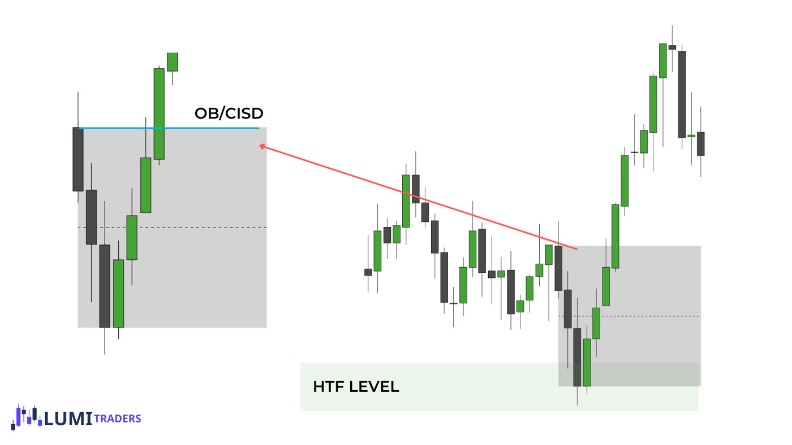
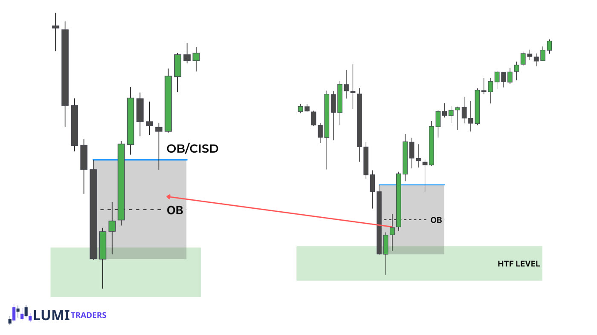
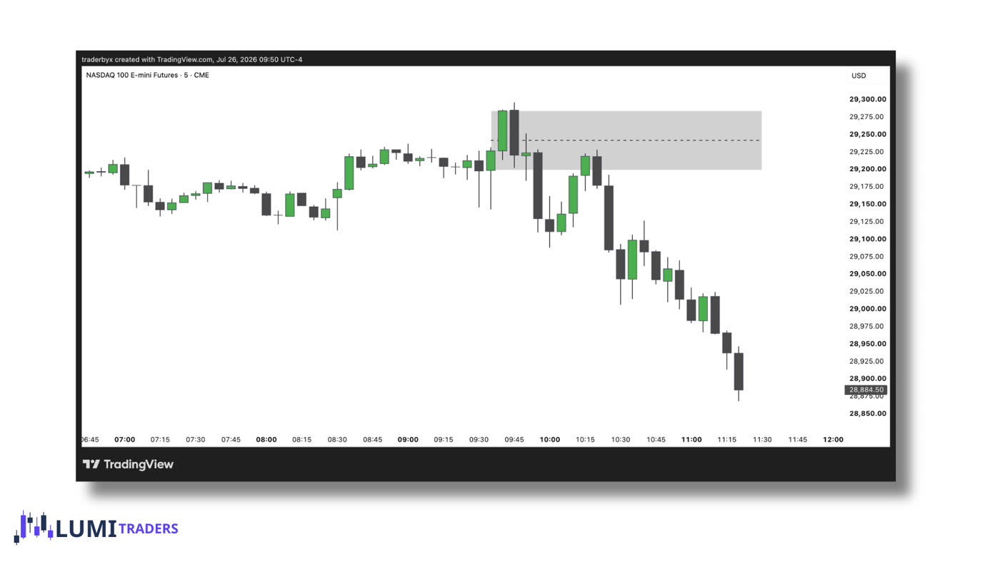
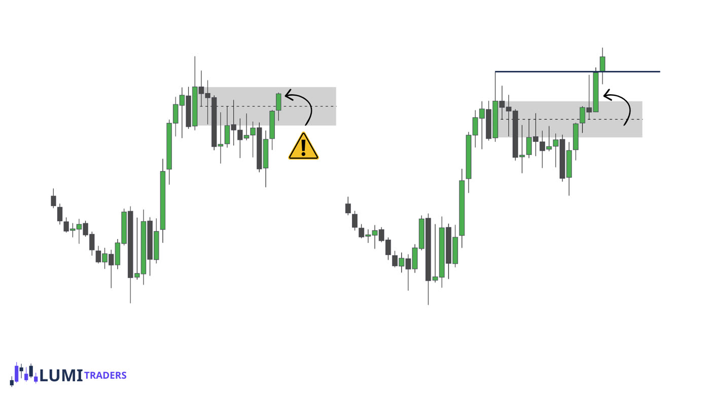
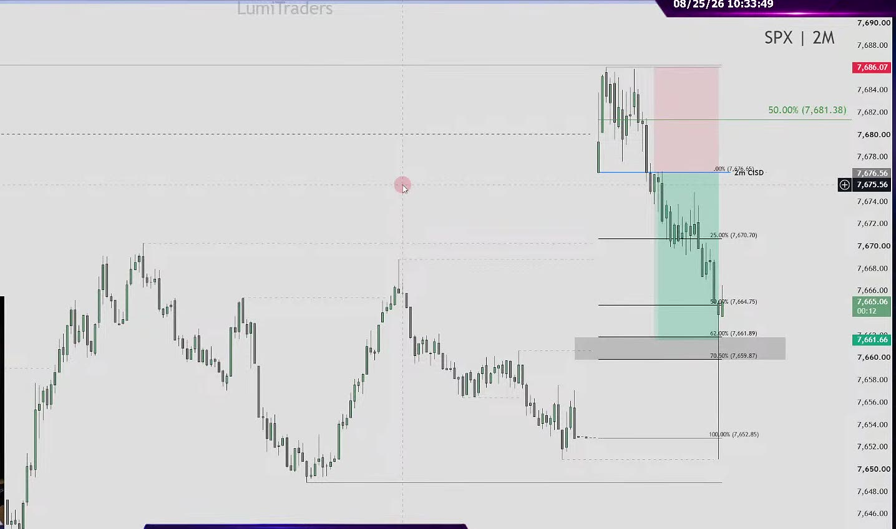
Do this now
Playbook A: the small pullback
Trade the day when price does not take the nearest high or low early.
Price opens near a high (or low) but does not reach it. The market still "wants" that level. So it pulls back a little into the gap, to 25–50%, and then goes to get it. That pullback is your entry.
- Price fails to reach the high abovelow below by 10:00.
- It pulls back into 25–50% of the gap (the blue zone).
- The 2-minute signal: a candle closes abovebelow the blue CISD line.
- BuySell at the next candle's open. Red box = stop. Green box = target: the high or low that was not taken.
Her sources do not agree exactly, so here is how she actually handles it. Her written lesson says "Reaction from 25% doesn't need perfection — the CISD is what turns the level into a trade." On stream she is stricter. On a normal gap: "One tick above or below means no trades. Keep waiting" (Sep 16). Only on very big gaps (Sep 17, about 80 points; Oct 2, about 60) did she take a turn a few points short of 25%, as a B-grade trade at reduced size (Sep 17: 3 micros instead of 5). Rule for you: normal gap, no zone, no trade. Gap over 60 and a near-miss with a strong signal: reduced size.
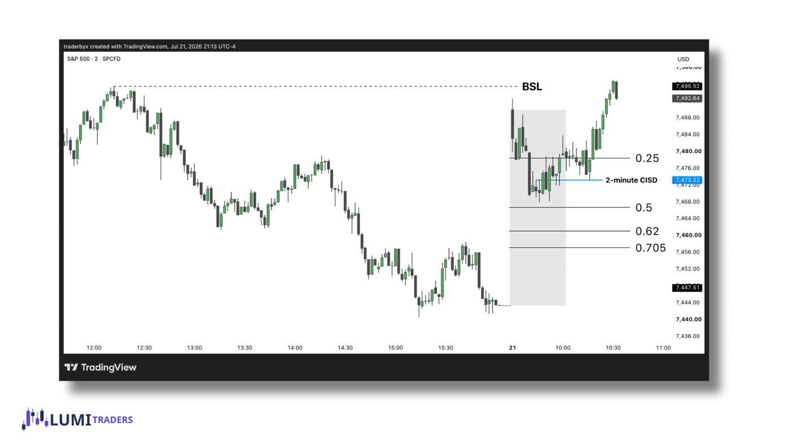
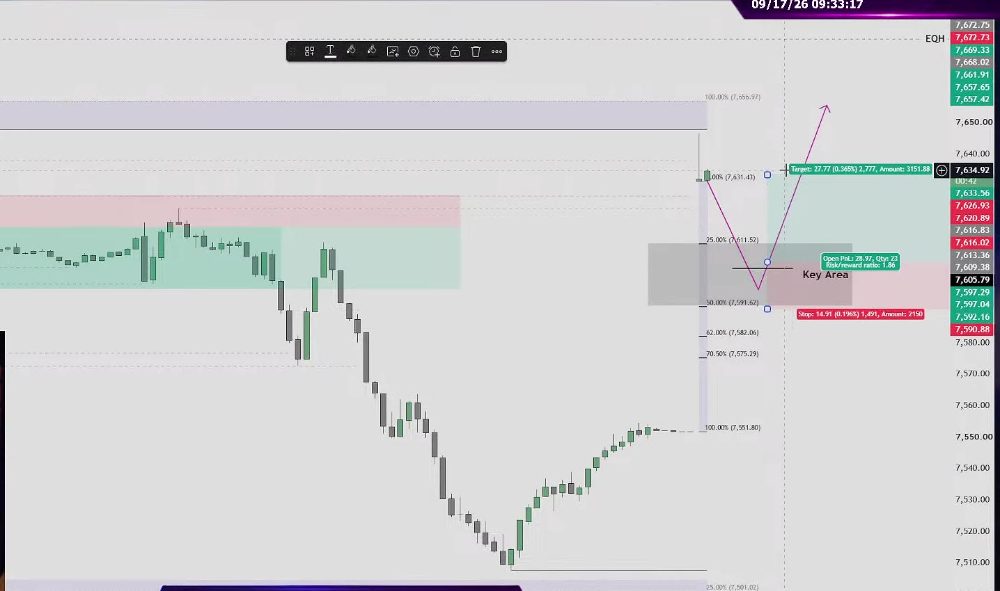
Do this now
Playbook B: the deep pullback
Trade the day when price does take the nearest high or low early.
Price takes the nearest high (or low) soon after the open. That was a fake move to grab stop orders. Now she expects a deep pullback into the gap, all the way to 62–70.5%. You can trade that move, and sometimes the bounce after it. "We're looking for 62% only if we took liquidity level" (Sep 17).
"Near liquidity taken first 15 minutes. You anticipate to get pulled back to OTE. Classic example, textbook example."Aug 26 live stream
- Price takes the high abovelow below in the first minutes.
- A 2-minute signal back into the gap. Trade 1: sellbuy, stop beyond the sweep, target 62%.
- Price reaches the OTE (amber zone). Trade 1 is done. She takes her profit here.
- Optional trade 2: a new signal at the OTE, aiming at a bigger level. Skip it if that level was already hit.
Note: her written lesson calls 62–70.5% the OTE. In a Nov 2025 post on X she called it 50–70.5%. Use 62–70.5% as the entry zone, as in her lesson and streams.
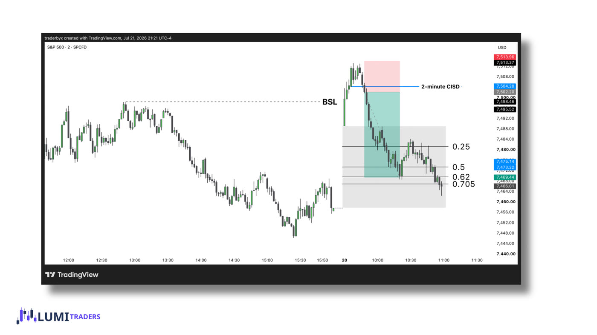

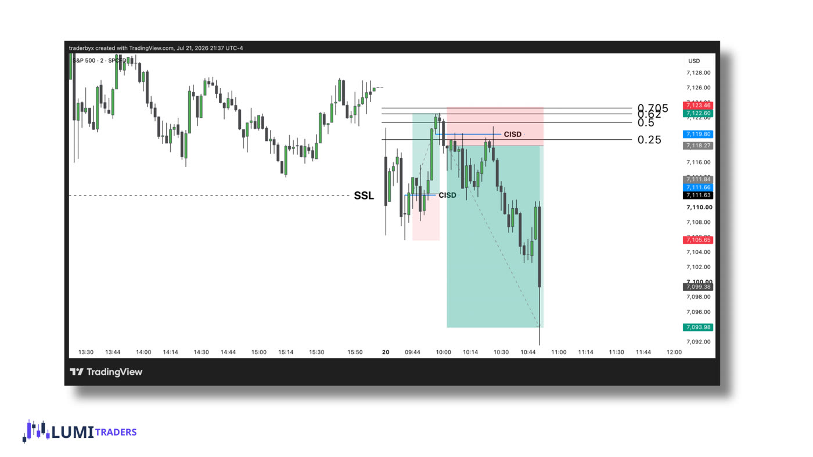
Do this now
Playbook C: the full fill
Recognise when the gap is going to fill completely, and trade with it.
Sometimes price does not stop in the OTE. If a 2-minute candle closes past 70.5%, she expects price to go all the way back to yesterday's close, and usually on to the next high or low. On stream she says this happens "nine of 10 times" (Sep 18). Her written lesson is more careful: it calls it "a continuation trade" and reminds you that "price does not seek to fill gaps", it seeks balance. Treat "nine of 10" as her impression, not a tested number. She calls C her "backtested continuation setup", and it is the one setup she still trades on gaps under 10 points.
- Price runs into the OTE without stopping.
- A 2-minute candle closes belowabove 70.5%. That close is the signal.
- Enter on that close (if there is 1R of room) or on the retest of 70.5%. Stop beyond 50% here (see the table for other gap sizes). Target 1: yesterday's close. Target 2: the next lowhigh beyond it.

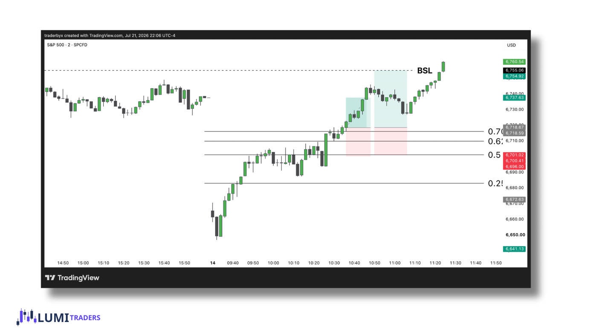
Do this now
Playbook D: after the gap fills
Know the follow-up trades once Playbook C is finished.
After the gap fills and price takes the next high or low, the move often turns around. She trades that turn in two steps, each with its own signal. Her lesson adds one condition: the main higher-timeframe target in the new direction must still be open (not yet reached). After trade 1 reaches 25%, two things can happen: price breaks back through 25% (trade 2), or it stays inside the gap for the rest of the day.
- The gap is filled and the lowhigh beyond it is taken.
- A 2-minute signal the other way. First trade, target: 25% of the gap.
- A 2-minute close back through 25%. Second trade, stop beyond the OTE, target: the next big level.
- The first target, 25%, is near today's open, so trade 1 means price travels back across almost the whole gap. Take profit there.
- If price shows no reaction at 25%, stay away (Aug 26).
- Her flip rule (Aug 28): a strong close back through 25% cancels any trade against it and becomes the second trade.
- Her own lesson example enters trade 2 at about 12:05, so don't rule it out just because it is after 11:30.
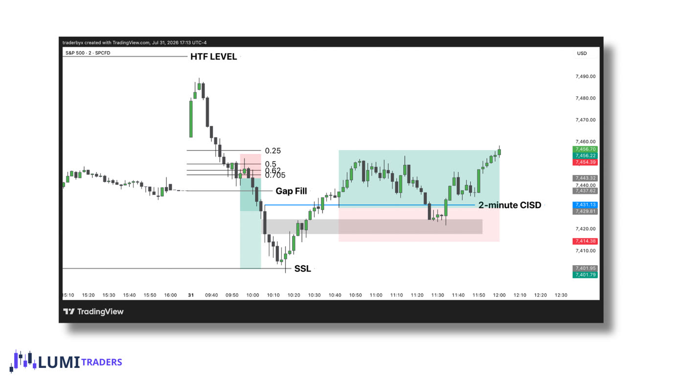
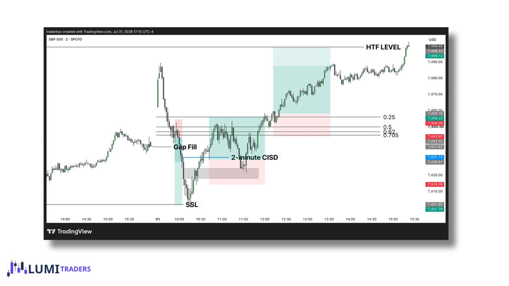
Do this now
Playbook E: the overlap gap
Find and use an overlap between today's gap and an older gap.
Sometimes today opens inside an older gap that never filled. The price area that both gaps share is extra strong: she calls it "one of the highest-probability setups".
- An older gap is still partly unfilled (gray).
- Today opens inside it. Use only the shared area (blue) and draw the gap levels on that area only. Her lesson: "apply OTE to that overlap area".
- Price reaches 25–50% of the shared area and gives a 2-minute signal. Trade away from it.
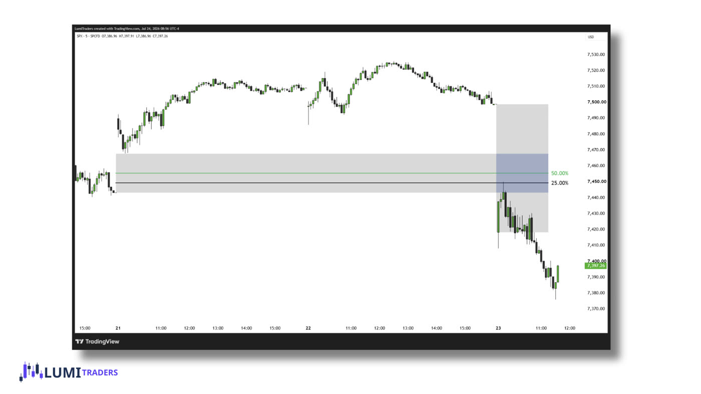
- Use only the unfilled part of the old gap. The indicator shades it and draws the overlap box for you; the box shrinks as the old gap fills.
- Entry, stop and target work as in Playbook A: a 2-minute signal at 25–50% of the overlap, stop beyond the swing, target away from the gap.
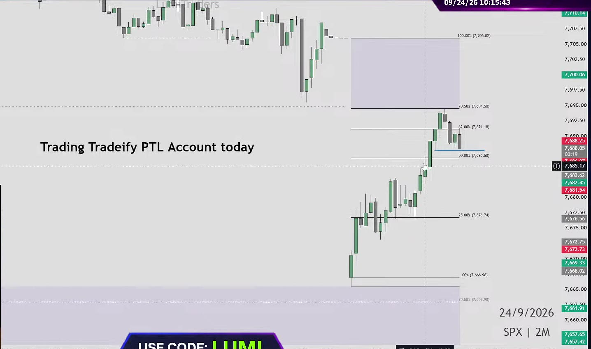
Do this now
Playbook F: old gaps and unfinished moves
Use old unfilled gaps every day, and know what she does when today's gap is too small.
Old gaps that never filled stay on her chart. Her lesson: "the 25% and OTE levels of old RTH gaps will offer strong reactions." She uses them every day, not only on small-gap days: as places where price may turn, and as profit targets (on Sep 1 she took profit at the 62% of an old gap).
Today's gap is under 10 points
- She trades from an older unfilled SPX gap instead.
- Entry: a 2-minute signal at its 25–50% or its OTE.
- Example, Sep 8: a 1-point gap. She bought from 25–50% of an old gap, stop beyond its 70.5%, and made 1R.
- Be careful on these days. Aug 27: "I take most losses when S&P doesn't have gap… no gap, don't trade." Only take an old-gap setup that is clearly A-grade.
"Delayed delivery"
- If yesterday's setup ran out of time, today's open may finish it.
- Example, Sep 30: she bought on a 2-minute close back above yesterday's 25%.
- She treats this as a weaker (B+) setup: smaller size.

Turn SPX levels into ES orders
Place the order on MES with the right stop, target and number of contracts.
SPX and ES trade at different prices, so you cannot copy prices from one to the other. She copies distances instead.
- Measure on SPX
How many points from your entry to the stop, and to the target? For example: stop 7 points, target 14 points.
- Buy or sell MES at market
When the SPX signal appears, place a market order on MES.
- Add the distances to your MES fill price
"If your stop loss according to S&P 7 points, your entry at 7747, you need to add seven points… 7754" (Sep 24). Set the target about 1 point early: "ES loves to play games" (Sep 22).
- Take profit by the SPX chart
When SPX reaches the level, take your profit, even if ES has not quite got there.
Order calculator
Fill in the SPX numbers and your MES fill price. You get the MES stop, target and how many contracts fit your risk.
Do this now
Manage the trade
Know when to take profit and when to move your stop.
- Trade at least 2 micros
So you can close part of the position early.
- Take the first profit early
At +10 ES points ("my base hit"), or at the next SPX level: 25% of the gap, the 9:30 open, or 62%.
- Only then move the stop to your entry (break-even)
"I never moved to break even while I was in trade without partial" (Sep 29). The exception: if NQ clearly turns against the trade, she sometimes gets out at break-even early (Sep 28).
- Move the stop further only at a level
"I trail when we hit key level" (Sep 14). Being in profit is not a reason by itself.
- Expect about 1–1.3R
"My risk reward used to be two R… now 1.3R" (Sep 3). The reason: on prop-firm accounts she always takes a partial at about 1R (10 ES points) to protect the account. On her own money she lets trades run for 2–3R without partials.
She moved her stop "without any significant reason". It was hit for +$15, then price went straight to her target. Move the stop only at a level.
Risk rules
Write your own risk limits and know her hard rules.
| Account | Most you lose in a day | Notes |
|---|---|---|
| 25K | $200–250 | "1–2 micro contracts" |
| 50K | $250–300 | First trade about $150 |
| 150K | $450–500 |
Daily limits from her Aug 6 post on X; she only raises them after an account's second payout. Her stream numbers were a little lower. Examples for a $250 risk on 50K: stop 10 points → 4–5 MES; stop 5 points → 9–10 MES; stop 20 points → 2 MES. With stops of 13–14 points or more she cuts size or moves the trade to a competition or evaluation account. After a loss, her next trade risks about half (around $75 on 50K).
- No setup, no trade."Big huge bold rule number one. I'm trading my model only" (Oct 2).
- Two losses and you stop for the day."My rule number one, once I took two losses in a row, I usually done for the day… This how I keep my accounts alive" (Sep 21). A re-entry on the same idea counts.
- Size by quality.She grades every setup: A+ and A on funded accounts at normal size; B-grade setups at reduced size or on evaluation accounts. A 50/50 setup is a skip: "When you feel like this set up is 50/50, don't trade it" (Sep 21).
- Size by the stop."It's not about how many contracts… it's about how much I'm willing to lose" (Sep 1). A wider stop means fewer contracts, never more dollars at risk.
- No revenge trades.After a loss on a messy day: "that's a sign for you, walk away."
Do this now
Follow two real days from start to finish
See every step of the model happen in order, on her real charts.
Sep 24 · OTE reaction on an overlap day · sell · about +$500 (≈1.4R)
No high or low was taken at the open ("middle of nowhere"), so this is not a textbook A or B. She traded the reaction from today's OTE, shorting only while price stayed below 70.5%, and graded it "A minus" because NQ was late. She took it only on her competition account: "don't copy this on your personal funded evaluations." Study it for the process, not as a trade to copy.
- BeforeShe sets one rule for the day
"I'm going to only trade my strategy. If nothing will be presented, it's perfectly fine."
- 9:30She measures the gap: 39 points down, inside an older gap
"Oh, huge gap. We have overlap gap. That's even better." Plan: wait for a bounce into the gap, then sell.
9:32. Gap levels drawn; her pen line shows the plan. - 10:15Price reaches 62–70.5% and gives a signal
"I'm going to use the very first touch [of] my key level, which was OTE."
10:15. Price in 62–70.5% (7,691–7,694.50). The blue line is the signal. - 10:15–10:44She waits for NQ to agree
"I wouldn't short until NQ will show any signs of reversal." Specifically: NQ had to sweep its London high, lose its 10:00 AM open and print its own 2-minute order block. That took about 30 minutes.
- 10:44She sells 10 MES
Stop about 7 points above the swing high: 7 points × 10 MES × $5 = $350 at risk.
- ~10:55First profit at 25% of the gap
"Since the stop according to SPX, will partial according to SPX as well."

10:53. Left: the sell running down toward 25%, where her first profit order waits. Right: her MES order screen. - 11:13She closes the rest near the 9:30 open, about +$500
The final target was the bottom of the gap. She would not sell again once price was back above 25%: "This 25% at this point is basically resistance." +$500 on $350 risk ≈ 1.4R.
Sep 17 · Playbook A on an 80-point gap · two B-grade buys · +10 points each
A real Playbook A day, but neither entry was inside 25–50%. Watch how she cuts size because of it.
- BeforeBias: buy a pullback
"I see no reason to look for longs without pull back to this gap."
- 9:33The equal highs were not taken, so: wait for 25–50%
"Going down to 25-50% but fails to take buy side… I will wait for two minute order block."
9:33. "Key Area" = 25–50%. Her drawn path: down into it, then up to the highs. - 10:14Buy 1, reduced size
The signal came about 5 points before 25%, so she used 3 micros instead of 5 with a 10-point stop. Profit taken (about 1R), then stop to entry.
- 11:11Buy 2 on a fresh signal
Again not from the zone: "kind of B setup simply because it's not like from our area… super close to 25%." Stop below the swing low, profit at the top of the gap.
- ~11:40Done for the day
"First trade was 10 points, second trade 10 points. It's my base hits on ES."
Do this now
Your daily routine and checklist
Have a fixed morning routine and a checklist you run before every trade.
- Bias 8:30–9:15
Daily chart objective. ES and NQ vs. their opening prices. Any news at 10:00?
- Two plans 9:15–9:29
"If it doesn't take X: 25–50%. If it takes X: OTE."
- Measure the gap 9:30
On SPX, with the calculator. Under 10 points: no A or B, only C or an old gap at small size.
- Watch the liquidity 9:30–10:00
Is the nearest high/low taken? If yes: Playbook B can trigger now. A 2-minute close past 70.5%: Playbook C. Otherwise wait for 10:00, then Playbook A. News at 10:00: no trade until the 10:00 candle has closed.
- Wait for the zone and signal 9:45–11:00
Price in the zone, 2-minute signal on SPX, NQ agrees, right side of the 10:00 open.
- Run the checklist, then enter
Market order on MES. Stop and target from the SPX distances.
- Manage
Profit at +10 points or the next level, then stop to entry.
- Stop usually by ~11:30
After your target, after 2 losses, or when nothing sets up. That is her schedule; a valid setup later (like her 12:05 Playbook D lesson trade) still counts.
Pre-trade checklist
Tick each line before you click buy or sell. Ticks are saved for today only.
Do this now
Final test
Score 8 out of 10 or better. Then you are ready for the practice plan.
Ten situations from her streams and lessons, covering the setups, filters, ES orders and sizing. Pick an answer to see her reasoning. Your first answer counts.
Your 4-week practice plan
Go from understanding the model to trading it with small, controlled risk.
- Week 1: draw only
Every morning: measure the gap, mark the nearest high/low, predict A, B or C. At 11:30 check what happened. No trades.
- Weeks 2–3: replay 50 days
TradingView replay on SPX 2-minute. Log every trade with the fields below. Only count trades with a real signal in the zone.
- Week 4: paper trade live
Full routine, checklist and simulated MES orders. Compare with her stream that day.
- After that: 1–2 MES on one practice or evaluation account
Fixed $150 risk. Two losses and done. Best setups only, until you have 30 live trades logged.
What to write down for every trade
| Field | Example (Sep 24) |
|---|---|
| Date | 2026-09-24, Thursday |
| Gap size and direction | 39 points down |
| Nearest high/low taken before 10:00? | No (nothing nearby) |
| Playbook and grade | OTE reaction on an overlap day · A− |
| NQ agrees? | Not until 10:44 |
| Entry, stop, target (SPX points) | OTE, 7 pts, partial at 25%, rest at the 9:30 open |
| Result in R | about +1.4R |
| Account and rules | Competition account only; no rule broken |
She streams 9:00–11:30 AM New York time on YouTube. Seeing what she skips teaches as much as seeing what she trades.
Track your weeks
Cheat sheet
The whole model on one screen. Keep it open on your phone during the morning.
| If | Playbook | Zone | Target |
|---|---|---|---|
| Not taken by 10:00 | A | 25–50% | The untaken high/low (partial at the 9:30 open) |
| Taken 9:30–10:00 | B | Signal after the sweep; then OTE | 62% (trade 1) · next big level (trade 2) |
| 2-min close past 70.5% | C | On the close, or the 70.5% retest | Yesterday's close, then the next high/low |
| Gap filled + next level taken, HTF target still open | D | Signal the other way | 25%, then the next big level |
| Today opens inside an old gap | E | 25–50% of the overlap | Away from the gap |
| Gap under 10 (or use C) / unfinished move | F | Old gap's 25–50% or OTE; or a close back past yesterday's 25% | Away from the level · small size |
- SignalAt the level, a 2-minute body closes past the run of opposite candles that began at the level. Enter next open. Stop beyond the swing. Box 50% must hold.
- FiltersShows on SPX · NQ agrees (else wait, or evaluation account only; C doesn't need it) · after 10:00, on the right side of the 10:00 open · not a V, not from nowhere.
- Manage2+ micros · first profit at ~1R / 10 ES points / next SPX level · then stop to entry · trail only at levels.
- RiskSame dollars every trade (about $150 first trade on 50K) · 2 losses = done · 50/50 = skip · near-miss on a 60+ gap = reduced size.
When she does not trade
Most of what she teaches is what she skips.
| Situation | Her reason |
|---|---|
| Price leaves without a pullback | "If it's going to be straight down at the open and nothing else, no trade." (Sep 28) |
| Price misses the zone by a tick | "It's all about enter this area." (Sep 16) |
| Good SPX setup, NQ the other way | "I wouldn't short until NQ will show any signs of reversal." (Sep 24) |
| Slow signal, no strong candle | "Most my losses happens in this kind of situation." (Aug 25) |
| Turn "from nowhere" | "From here, no thank you." (Sep 14) |
| Less than 1R possible | "I don't want .5 R trade." (Oct 1) |
| High taken but only a 50% pullback | "Wait for OTE or no trades." (Sep 11) |
Her losses and why
| Date | Loss | What went wrong |
|---|---|---|
| Aug 21 | −$268 | Entered before her own signal. |
| Aug 24 | −$350 | Shorted against the model: the low had been taken in the first 15 minutes, so the model said buy toward the OTE. Her review the next day: "one of the stupidest idea." |
| Sep 16 | −$145 | FOMC day, ES/NQ disagreeing, entered seconds before the candle closed, "trying to trade against the trend". |
| Sep 21 | −$160 | Ignored NQ and shorted against the trend: "Nothing A+." |
| Sep 23 | −$200 | Two trades outside the model. (A third, where she moved her stop for no reason, made only +$15 before price ran to her target.) |
| Sep 25 | −$255 | Sold before 10:00 without a 2-minute signal. |
29 sessions reviewed
Every live stream from Aug 21 to Oct 2, 2026, as she reported it. "Comp" = a competition account with no loss limit.
Swipe the table sideways to see every column.
| Date | Gap | Setup | Trades | Result |
|---|---|---|---|---|
| Aug 21 | ~30 up | C (planned) | MES sell, too early (eval accounts) | −$268 |
| Aug 24 | down | Delayed delivery | MES sell against the model | −$350 |
| Aug 25 | ~30 up, overlap | B | Skipped a sell that worked; ES buy | ~flat |
| Aug 26 | ~10–15 down | C | 2 ES buys | Win, 1.6R |
| Aug 27 | ~30 up | B | ES buy, half size | Win |
| Aug 28 | ~6–8 up | C → D | Sell (eval), buy | +$313 on the sell; the long was +$700 open, partials taken |
| Aug 31 | ~20 down | None | Gold instead | Small win |
| Sep 1 | large down | SPX signal rejected | NQ continuation buy | Win |
| Sep 2 | ~3 up | F | NQ, MES | ~BE |
| Sep 3 | large up | Pullback into gap; 70.5% break on a swing | 2 sells, 1 buy | ~+$945 |
| Sep 4 | ~20, filled at the open | C (weak) | ES sell (BE), NQ sell | ~+$500 |
| Sep 8 | ~1 | F | ES buy (ES signal before SPX) | 1R |
| Sep 10 | 40+ down, overlap | B | ES buy | ~1R |
| Sep 11 | overlap | No pullback | None | — |
| Sep 14 | large down | E | NQ sell (loss), ES buy | +$151 |
| Sep 15 | 7 | Skipped | Scratch | ~0 |
| Sep 16 | >10 up, FOMC | A not triggered (1 tick short) | NQ, ES sell | −$145 |
| Sep 17 | ~80 up | A (B-grade entries) | 2 ES buys | +10 pts each |
| Sep 18 | small | C | ES sell | Win |
| Sep 21 | large | Counter-trend, off-model | ES sell, gold buy | −$160 |
| Sep 22 | ~6 up | C (70.5% break) | 4 MES sells (comp) | +$181 |
| Sep 23 | small | Off-model | 3 ES trades | −$200 |
| Sep 24 | ~39 down, overlap | OTE reaction | MES sell (comp) | +$500 |
| Sep 25 | small | B | Loss, then 2 wins | ~+$500 |
| Sep 28 | ~20 down | No pullback | 2 MES buys BE, oil buy | +$300 |
| Sep 29 | <10 | C | ES (model), NQ off-model (comp) | +$1,051 |
| Sep 30 | ? | Delayed delivery | ES buy above yesterday’s 25%, + eval trade | ~+$300 per account |
| Oct 1 | small | Missed | 3 trades (comp) | +$80 |
| Oct 2 | ~60 up | A | 3 trades | +$530 per account |
Where her sources disagree
Her written lessons, live streams and X posts were made at different times, and the model has changed. This course follows what she does now on stream, unless noted. Here is every place they differ, so nothing surprises you when you watch her.
Swipe the table sideways to see every column.
| Topic | Written lesson | Streams / X | This course uses |
|---|---|---|---|
| Yesterday's close | 4:00 PM close | "Put 4:08… a real deal closure at 4:08" (Sep 2) | 4:08 (matches her charts) |
| Liquidity window | First 15 minutes | "Since July… extend time to 30 minutes" (Sep 25). An older X tip: 9:30–9:40 | 9:30–10:00 |
| Waiting for 10:00 | Lesson charts enter at 9:44–9:56 | "Wait for 10" on choppy/news days; enters earlier on clear days | Wait only to confirm "not taken"; B and C can trigger earlier |
| OTE zone | 62–70.5% | One X post (Nov 2025): "OTE (50–70.5%)" | 62–70.5% |
| Order block | Run of candles from the first one that tapped the level (preferred), or just that first candle | "Very first touch of my key level" (Sep 24); prefers the run (model video) | The run, starting at the first touch |
| Signal timeframe | 2-minute | 5-minute OB on X until ~Mar 2026; 3-minute on ES for some overlap trades | 2-minute (the only one she backtested) |
| Near-miss at 25% | "Doesn't need perfection" | "One tick above or below means no trades" (Sep 16); took 5-point misses at reduced size only on 60–80 point gaps (Sep 17, Oct 2) | Normal gap: no zone, no trade. 60+ gap: near-miss at reduced size |
| Gap fill after 70.5% close | "Can offer a continuation trade"; "price does not seek to fill gaps" | "Nine of 10 times" (Sep 18) | A strong tendency, not a tested number |
| Playbook C entry | Retest of 70.5% with a CISD; 50% must hold | Often on the close; waits for the retest if R:R is poor | Either, with at least 1R |
| Old gaps | 25% and OTE give strong reactions | Used daily, as reactions and targets | Step 13 |
| NQ disagreeing | (not covered) | "Decoupled equals stay away", but she sometimes trades through it and doesn't wait for NQ on 70.5% breaks | Funded accounts out; evaluation or competition accounts only. C doesn't need NQ |
| Fridays | (not covered) | "Biggest losses on Friday" (Sep 4) vs "my favorite day of the week" (Oct 2) | No special rule |
| Win rate | (none given) | 60%, 63%, 76% (Sep 29, her 12-month figure for this strategy), and "less than 70, more than 65" overall | Plan for ~60% at 1–1.3R |
| Daily risk | (not covered) | Streams: $200–250 on 50K. X (Aug 6): $250–300, raised after the 2nd payout | Step 16 table |
Not the same model: her "2-minute open-high-low-close" video (71% over ~300 trades, fixed 2R) is a different setup around the 10 AM and 1 PM opens. Her 65–68% figures on X are for her gold and liquidity-sweep models. None of these numbers apply to the gap model.
Sources
- funded.now/lessons/spx-rth-gap: her written lesson.
- Order Block / CISD, OTE and 10 AM Open lessons.
- funded.now/indicators: the free indicators.
- Her YouTube streams: 29 sessions reviewed, Aug 21 – Oct 2, 2026.
- @LumiTraders on X: about 1,130 posts (Mar 2023 – Oct 2026) were searched; her first SPX gap posts are from Nov 2025.
Checked twice on Oct 3, 2026 against her written lessons, all 29 stream transcripts and her X posts. Corrections are in the course; remaining differences are listed under "Where her sources disagree". Transcripts are auto-generated, so quotes and prices can be slightly off.
Funded.Now is her prop-firm affiliate site (code LUMI). Prices quoted from streams come from auto-generated transcripts and are approximate.